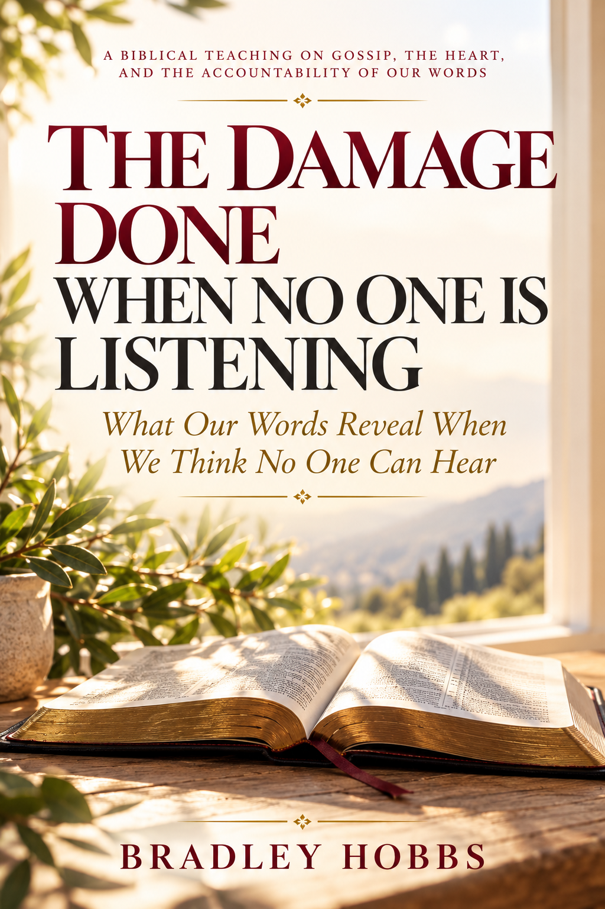

About the Author and the Work
Why I Wrote This Book
A biblical examination of gossip, the heart, and the responsibility carried by our words.

About This Teaching
The Damage Done When No One Is Listening grew from a concern about the harm that can take place in conversations people assume are private or harmless. Words can be spoken in the name of concern, friendship, prayer, or discernment while still carrying the power to wound, divide, and shape the way others see a person. I wanted to create a teaching that asks the Church to look honestly at that reality through the authority of Scripture.
This book is an invitation to examine ourselves before we decide we have the right to examine everyone else. It considers the connection between the heart and the tongue, the responsibility we have for what we repeat, and the difference between gossip and necessary, responsible truth telling. The purpose is not to silence people who need help or to discourage the reporting of abuse or misconduct. It is to call our words, motives, and actions into alignment with the truth and character of Jesus Christ.
Inspiration
An important inspiration for this project was Matt C. Mitchell’s book Resisting Gossip: Winning the War of the Wagging Tongue. Mitchell’s work addresses the seriousness of gossip and the need to resist it. This teaching was developed as my own Scripture centered work, shaped by my study, convictions, and desire to encourage personal examination and spiritual growth. The mention of Mitchell’s book acknowledges inspiration and does not imply that he endorsed, coauthored, or reviewed this work.
My hope is that readers will not approach these pages merely to identify other people’s failures. I hope we will each allow the Word of God to search our own hearts, correct our speech, and teach us to speak with truth, wisdom, compassion, and accountability.
Bradley Hobbs